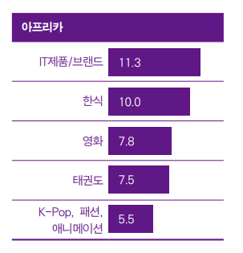
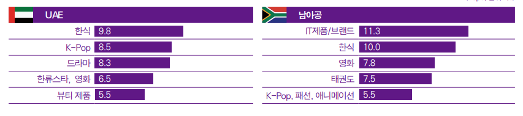

| 한국 연상 이미지 | 국가별 한류 순위 |
|---|---|
|  |  |
UAE에서는 ‘한식’이 4년 연속 연상률 1위를 기록했던 ‘K-Pop’을 제치고 선두를 차지했고 응답률도 소폭(2.5%p) 증가했다.
다음으로 ‘K-Pop’, ‘드라마’, ‘한류스타’, ‘영화’에 대한 연상률이 높은 것으로 조사돼 소비재 연상률이 높았던 전년 조사 대비 전반적으로 문화콘텐츠에 대한 응답률이 증가했다.
남아공의 경우 전년도에 이어 ‘IT제품/브랜드’가 선두를 차지했다. 이어 ‘한식’, ‘영화’, ‘태권도’, ‘K-Pop’, ‘패션’, ‘애니메이션’이 상위권을 형성했는데 전년도 조사에서 11.0%의 연상률로 2위를 기록했던 ‘K-Pop’의 낙폭(5.5%p)이 눈에 띈다
아프리카의 전체 문화콘텐츠 소비량 대비 한국 콘텐츠 소비량 비중은 26.01%로 5개 권역 전체
평균(27.4%)보다 낮았고 그 비중이 가장 높은 장르는 패션이었다(31.53%). 다음으로 뷰티(30.21%), 영화(29.59%), 드라마(27.56%)에 대한 소비가 비교적 활발한 것으로 조사됐다.
아프리카도 나머지 4개 권역과 마찬가지로 한국 영상, 음악콘텐츠에 대한 접촉 비중은 장르별로
‘온라인/모바일 플랫폼’이 66.5%에서 79.1%를 기록해 1위였지만 2위인 ‘TV’와의 격차는 다른 지역과 비교해 작았다.
한국 패션, 뷰티, 음식은 ‘SNS상의 영상/사진’을 통해 접촉하는 경우가 가장 많았고 이어 ‘유튜브 등에 업로드 된 개인이 직접 만든 동영상’의 비중이 높았다.
게임의 경우 ‘온라인/모바일 상에서 직접 플레이’하는 비중이 가장 높았고 출판물은 ‘글로벌/자국 사이트’를 통해 접촉하는 경우가 가장 많은 것으로 조사 돼 타 권역과 유사한 패턴을 보였다
중동과 아프리카는 전체 권역 중 가장 높은 한국 제품·서비스 이용 의향을 보였다. 전년과 비교 해 중동은 8.5%p, 아프리카는 12.5%p 이용 의향이 증가했다. 중동에서는 ‘한국 의류’, ‘가전제품’, ‘화장품’에 대한 구매 욕구와 ‘한국 방문’, ‘음식점 식사’ 의향이 높게 나타났고, 아프리카는 ‘한국식품’, ‘가전제품’, ‘휴대폰’ 구매 의향과 ‘한국 방문’, ‘전통문화 체험’에 대한 의향이 큰 것으로 조사됐다